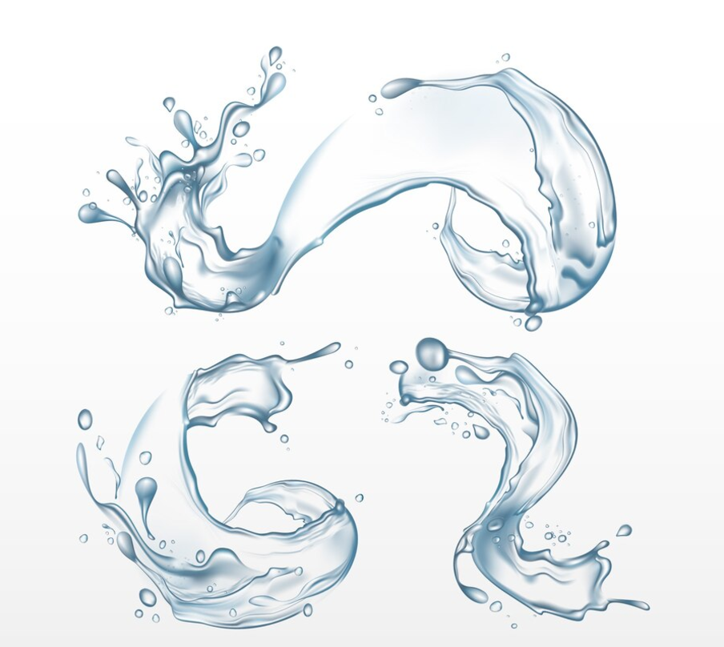

Reduce energy consumption

⦿ Use energy-efficient appliances and LED lights.
⦿ Turn off electronics when not in use.
⦿ Consider renewable energy sources like solar panels.
Water conservation
⦿ Fix leaks and install low-flow fixtures.
⦿ Reuse greywater for gardening.
⦿ Adopt water-saving habits, like turning off the tap while brushing your teeth.
Choose sustainable transportation

⦿ Replace disposable items with reusable alternatives, such as water bottles, straws, and shopping bags.
⦿ Purchase products with minimal or eco-friendly packaging.
Reduce single-use plastics

⦿ Buy products from sustainable and local sources.
⦿ Support companies with ethical and eco-friendly policies.
⦿ Advocate for sustainable practices in your workplace or community.
Support eco-friendly practices and businesses

⦿ Buy products from sustainable and local sources.
⦿ Support companies with ethical and eco-friendly policies.
⦿ Advocate for sustainable practices in your workplace or community.
Plant trees and support green spaces

⦿ Participate in local tree planting events.
⦿ Start a garden at home or turn your balcony into a green space.
⦿ Protect natural habitats by collaborating on conservation projects.